Transformer#
(Machine Translation Example)
Transformer is popular SOTA (state-of-the-art) architecture and used in today’s a lot of successful works in neural methods.
Finally we’ll implement transformer using previously learned architectures - such as, language modeling, encoder-decoder, and attention.
As you saw in exercise 08,
Transformer is motivated by this successful architecture.
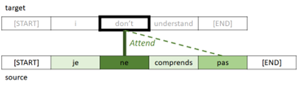
From : “08 Attention (Machine Translation Example)”
In this example, we will implement the architecture written in the famous paper “Attention Is All You Need”.
As you saw in exercise 08, we have used RNN architecture (GRU gate) for getting contexts in encoder and decoder.
However, in this transformer architecture, attention is also used even for getting contexts in encoder and decoder, instead of using RNN architecture. (In below architecture, you will find that there’s no RNN layers.)
Total 3 attend layers (encoder’s self-attention, decoder’s self-attention, and encoder-decoder cross attention) are then applied in this network.
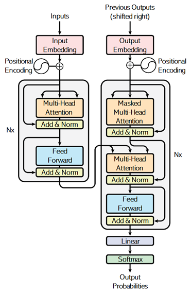
From : “Attention Is All You Need” (Vaswani, et al., 2017)
Unlike soft attention in exercise 08, it applies the following attention - which is called “scaled dot-product attention” - in these 3 parts of attend layers.
As you can see below, this model measures the similarity by the dot-product operation, and 3 networks for composing query, key, and value will be trained.
👉 When the query vector and key vector are similar, it will have a large value of dot product between these vectors.
👉 Such like soft attention (in exercise 08), the matrix \(Q \cdot K^T\) will then have the relationship mapping (weight’s mapping) between query and key.
👉 Finally, by applying dot-product operation again between this result and value’s vector, the final feature vectors will be obtained in each token.
👉 To say intuitively, first dot-product operation asks each keys by queries in the sequence, and then composes the objectives by combining between its results and values by the second dot-product operation.
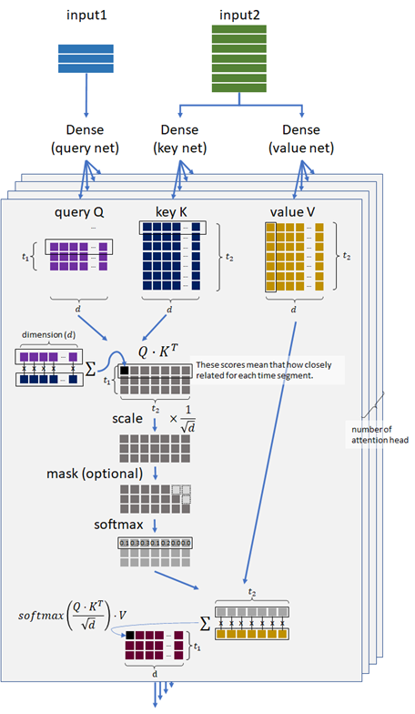
In the attend layer in encoding and decoding (see below), input1 and input2 are the same sequence in above scaled dot-product attention. This architecture is called self-attention.
For instance, the word “this” in “this is a pen” will have the close relationship with the word “pen”. The self-attention captures this kind of self-regressive relations in the sequence.
By capturing these relations, the sequence will be well annotated in both encoder and decoder, instead of using RNN layer.
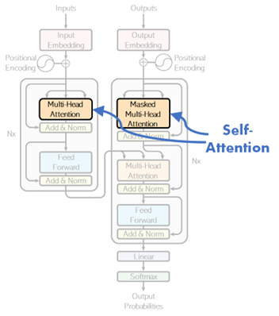
💡 Note : On contrary, the above cross-attention layer is for machine translation task.
In the self-attention layer in decoder, each time segment should not refer to the future segment. It then applies the masked attention, instead of applying fully-connected attention.
Later we will see about this causal attention.
By the design of this architecture, transformers will have the ability to capture the distant contexts and we can also expect to have the ability to capture more difficult contexts rather than RNN-based encoder-decoder.
Transformer is today’s key part for SOTA (state-of-the-art) language models and a lot of today’s famous algorithms (such as, BERT, T5, GPT, etc) use transformers in its architectures.
As you saw in basic language model’s example, we can train transformers with unlabeled data (i.e, self-supervised learning) - such as, next word’s prediction, masked word’s prediction.
By this unsupervised fashion, a lot of today’s algorithms learn a lot of language properties with existing large corpus (such as, Wikipedia), and can then be fine-tuned for downstream tasks with small number of labeled data - such as, sentiment detection, text classification, summarization, or modern instruction fine-tuning, etc. (See here for fine-tuning example in Hugging Face.)
For example, OpenAI GPT-3 175B is trained on 3.7 trillion tokens.
💡 Note : Transformers are categorized into 3 types : encoder-only, decoder-only, and encoder-decoder. (See here for the summary of encoder-only, decoder-only, and encoder-decoder language models.)
For instance, you can use encoder-only transformer for applying classification (such as, named entity recognitions), generating images, sentence embedding, and more.
A lot of today’s popular large language models (LLMs) - such as, ChatGPT, LLaMA, etc - are decoder-only models. These are in-context generative models, in which the output is generated by using only input (prompt), and the context of input’s text (prompting) is then very important to get the optimal results.
These models are trained by 3-stages for practical use :
pretraining (self-supervised learning),
supervised fine-tuning (SFT), and
alignment.
(See here for these 3 training strategies.)
Now let’s see the implementation of each part in this transofrmer architecture, and train the model for machine translation task.
For learning purpose, we’ll implement all layers (modules) from scratch, but you can also use built-in torch.nn.MultiheadAttention in PyTorch.
!pip install torch==1.13.1 torchtext==0.14.1 --extra-index-url https://download.pytorch.org/whl/cu114
!pip install numpy nltk
Prepare data#
In this example, I use Engligh-French dataset by Anki.
!wget http://www.manythings.org/anki/fra-eng.zip
--2023-02-19 07:59:20-- http://www.manythings.org/anki/fra-eng.zip
Resolving www.manythings.org (www.manythings.org)... 173.254.30.110
Connecting to www.manythings.org (www.manythings.org)|173.254.30.110|:80... connected.
HTTP request sent, awaiting response... 200 OK
Length: 6720195 (6.4M) [application/zip]
Saving to: ‘fra-eng.zip’
fra-eng.zip 100%[===================>] 6.41M 11.6MB/s in 0.6s
2023-02-19 07:59:21 (11.6 MB/s) - ‘fra-eng.zip’ saved [6720195/6720195]
!unzip fra-eng.zip -d fra-eng
Archive: fra-eng.zip
inflating: fra-eng/_about.txt
inflating: fra-eng/fra.txt
!head -n 5 fra-eng/fra.txt
Go. Va ! CC-BY 2.0 (France) Attribution: tatoeba.org #2877272 (CM) & #1158250 (Wittydev)
Go. Marche. CC-BY 2.0 (France) Attribution: tatoeba.org #2877272 (CM) & #8090732 (Micsmithel)
Go. En route ! CC-BY 2.0 (France) Attribution: tatoeba.org #2877272 (CM) & #8267435 (felix63)
Go. Bouge ! CC-BY 2.0 (France) Attribution: tatoeba.org #2877272 (CM) & #9022935 (Micsmithel)
Hi. Salut ! CC-BY 2.0 (France) Attribution: tatoeba.org #538123 (CM) & #509819 (Aiji)
!wc -l fra-eng/fra.txt
197463 fra-eng/fra.txt
from pathlib import Path
import numpy as np
pathobj = Path("fra-eng/fra.txt")
text_all = pathobj.read_text(encoding="utf-8")
lines = text_all.splitlines()
train_data = [line.split("\t") for line in lines]
train_data = np.array(train_data)[:,[1,0]]
# print first row
train_data[0]
array(['Va !', 'Go.'], dtype='<U349')
In this training set, text length in the latter part is longer (and includes multiple sentences) than the former part.
Therefore we will shuffle entire data.
np.random.shuffle(train_data)
train_data[0]
array(['Je suis heureux que vous veniez.', "I'm glad you're coming."],
dtype='<U349')
When data consists of multiple sentences, it converts to a single sentence.
import nltk
import nltk.data
nltk.download("punkt")
tokenizer_en = nltk.data.load("tokenizers/punkt/english.pickle")
tokenizer_fr = nltk.data.load("tokenizers/punkt/french.pickle")
fr_list = []
en_list = []
for x in train_data:
x1 = tokenizer_fr.tokenize(x[0])
x2 = tokenizer_en.tokenize(x[1])
if len(x1) == len(x2):
fr_list += x1
en_list += x2
train_data = np.column_stack((fr_list, en_list))
[nltk_data] Downloading package punkt to /home/tsmatsuz/nltk_data...
[nltk_data] Package punkt is already up-to-date!
To get the better performance (accuracy), I standarize the input text as follows.
Make all words to lowercase in order to reduce words
Make “-” (hyphen) to space
Remove all punctuation except “ ’ “ (e.g, Ken’s bag, ces’t, …)
import string
train_data = np.char.lower(train_data)
train_data = np.char.replace(train_data, "-", " ")
for x in string.punctuation.replace("'", ""):
train_data = np.char.replace(train_data, x, "")
for x in "«»":
train_data = np.char.replace(train_data, x, "")
train_data = np.char.strip(train_data)
# print first row
train_data[0]
array(['je suis heureux que vous veniez', "i'm glad you're coming"],
dtype='<U250')
Add <start> and <end> tokens in string.
train_data = np.array([[" ".join(["<start>", x, "<end>"]), " ".join(["<start>", y, "<end>"])] for x, y in train_data])
# print first row
train_data[0]
array(['<start> je suis heureux que vous veniez <end>',
"<start> i'm glad you're coming <end>"], dtype='<U264')
Generate sequence inputs#
We will generate the sequence of word’s indices (i.e, tokenize) from text.
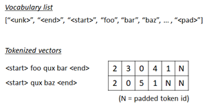
First we create a list of vocabulary (vocab) for both source text (French) and target text (English) respectively.
from torchtext.data.utils import get_tokenizer
from torchtext.vocab import build_vocab_from_iterator
max_word = 10000
# create space-split tokenizer
tokenizer = get_tokenizer(None)
# define tokenization function
def yield_tokens(data):
for text in data:
tokens = tokenizer(text)
yield tokens
# build vocabulary list for French
vocab_fr = build_vocab_from_iterator(
yield_tokens(train_data[:,0]),
specials=["<unk>"],
max_tokens=max_word,
)
vocab_fr.set_default_index(vocab_fr["<unk>"])
# build vocabulary list for English
vocab_en = build_vocab_from_iterator(
yield_tokens(train_data[:,1]),
specials=["<unk>"],
max_tokens=max_word,
)
vocab_en.set_default_index(vocab_en["<unk>"])
The generated token index is 0, 1, ... , vocab_size - 1.
Now we will set vocab_size as a token id in padded positions for both French and English respctively.
pad_index_fr = vocab_fr.__len__()
vocab_fr.append_token("<pad>")
pad_index_en = vocab_en.__len__()
vocab_en.append_token("<pad>")
Get list for both index-to-word and word-to-index.
itos_fr = vocab_fr.get_itos()
stoi_fr = vocab_fr.get_stoi()
itos_en = vocab_en.get_itos()
stoi_en = vocab_en.get_stoi()
# test
print("The number of token index in French (source) is {}.".format(vocab_fr.__len__()))
print("The padded index in French (source) is {}.".format(stoi_fr["<pad>"]))
print("The number of token index in English (target) is {}.".format(vocab_en.__len__()))
print("The padded index in English (target) is {}.".format(stoi_en["<pad>"]))
The number of token index in French (source) is 10001.
The padded index in French (source) is 10000.
The number of token index in English (target) is 10001.
The padded index in English (target) is 10000.
Now we build a collator function, which is used for pre-processing in data loader.
In this collator,
👉 First we create a list of word’s indices for source (French) and target (English) respectively as follows.
<start> this is pen <end> –> [2, 7, 5, 14, 1]
👉 For target (English) sequence, we separate into features (x) and labels (y).
In this task, we predict the next word in target (English) sequence using the current word’s sequence (English) and the encoded context of source (French).
We then separate target sequence into the sequence iteself (x) and the following label (y).
before :
[2, 7, 5, 14, 1]
after :
x : [2, 7, 5, 14, 1]
y : [7, 5, 14, 1, -100]
Note : Here I set -100 as an unknown label id, because PyTorch cross-entropy function (
torch.nn.functional.cross_entropy()) has a propertyignore_indexwhich default value is -100.
👉 Finally we pad the inputs (for both source and target) as follows.
The padded index in features is pad_index and the padded index in label is -100. (See above note.)
x : [2, 7, 5, 14, 1, N, ... , N]
y : [7, 5, 14, 1, -100, -100, ... , -100]
import torch
from torch.utils.data import DataLoader
seq_len_fr = 45
seq_len_en = 38
device = torch.device("cuda" if torch.cuda.is_available() else "cpu")
def collate_batch(batch):
label_list, feature_source_list, feature_target_list = [], [], []
for text_fr, text_en in batch:
# (1) tokenize to a list of word's indices
tokens_fr = vocab_fr(tokenizer(text_fr))
tokens_en = vocab_en(tokenizer(text_en))
# (2) separate into features and labels in target tokens (English)
y = tokens_en[1:]
y.append(-100)
# (3) limit length to seq_len and pad sequence
y = y[:seq_len_en]
tokens_fr = tokens_fr[:seq_len_fr]
tokens_en = tokens_en[:seq_len_en]
y += [-100] * (seq_len_en - len(y))
tokens_fr += [pad_index_fr] * (seq_len_fr - len(tokens_fr))
tokens_en += [pad_index_en] * (seq_len_en - len(tokens_en))
# add to list
label_list.append(y)
feature_source_list.append(tokens_fr)
feature_target_list.append(tokens_en)
# convert to tensor
label_list = torch.tensor(label_list, dtype=torch.int64).to(device)
feature_source_list = torch.tensor(feature_source_list, dtype=torch.int64).to(device)
feature_target_list = torch.tensor(feature_target_list, dtype=torch.int64).to(device)
return label_list, feature_source_list, feature_target_list
dataloader = DataLoader(
list(zip(train_data[:,0], train_data[:,1])),
batch_size=32,
shuffle=True,
collate_fn=collate_batch
)
# test
for labels, sources, targets in dataloader:
break
print("label shape in batch : {}".format(labels.size()))
print("feature source shape in batch : {}".format(sources.size()))
print("feature target shape in batch : {}".format(targets.size()))
print("***** label sample *****")
print(labels[0])
print("***** features (source) sample *****")
print(sources[0])
print("***** features (target) sample *****")
print(targets[0])
label shape in batch : torch.Size([32, 38])
feature source shape in batch : torch.Size([32, 45])
feature target shape in batch : torch.Size([32, 38])
***** label sample *****
tensor([ 14, 427, 164, 14, 8, 593, 1, -100, -100, -100, -100, -100,
-100, -100, -100, -100, -100, -100, -100, -100, -100, -100, -100, -100,
-100, -100, -100, -100, -100, -100, -100, -100, -100, -100, -100, -100,
-100, -100], device='cuda:0')
***** features (source) sample *****
tensor([ 2, 13, 39, 255, 53, 15, 641, 1, 10000, 10000,
10000, 10000, 10000, 10000, 10000, 10000, 10000, 10000, 10000, 10000,
10000, 10000, 10000, 10000, 10000, 10000, 10000, 10000, 10000, 10000,
10000, 10000, 10000, 10000, 10000, 10000, 10000, 10000, 10000, 10000,
10000, 10000, 10000, 10000, 10000], device='cuda:0')
***** features (target) sample *****
tensor([ 2, 14, 427, 164, 14, 8, 593, 1, 10000, 10000,
10000, 10000, 10000, 10000, 10000, 10000, 10000, 10000, 10000, 10000,
10000, 10000, 10000, 10000, 10000, 10000, 10000, 10000, 10000, 10000,
10000, 10000, 10000, 10000, 10000, 10000, 10000, 10000],
device='cuda:0')
Positional Encoding#
In the formal algorithms of transformer, the set of embedded tokens are encoded by positions without any additional parameters.
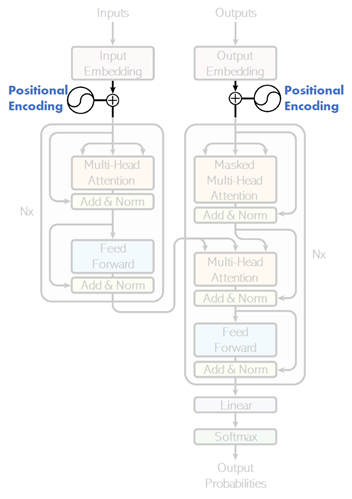
If there’s no positional encoding, the sequence will be treated as a bag of tokens in neural networks.
The positional information is needed for position-aware processing in attention.
There exist several ways (variations) for positional encoding.
In this example, I’ll apply the following positional encoding method (called sinusoidal positional encoding), which is introduced in the original paper of transformer.
👉 The positional vector \(PE(t)\) is :
where \(t = \{0, 1, \ldots\}\) is position (time-step) and \(d_e\) is embedding dimemsion.
👉 For \(t\)-th token in the sequence, the embedding \(E(t) \in \mathbb{R}^{d_e}\) then becomes \( E(t) + PE(t) \).
Note : Here we assume that \(d_e\) (embedding dimension) is an even number. (When it’s an odd number, the dimension between \(E(t)\) and \(PE(t)\) differs.)
👉 By applying this positional encoding, we can expect that the attention network will easily learn the position in each tokens, since there always exist a \( 2 \times 2 \) matrix \(\mathbf{M}_{ik}\) (depending on \(i\) and \(k\)) which satisfies
for any \(t\).
Note : In GPT, positional encoding is not a fixed encoding (not like above sinusoidal positional encoding) and it’s also learned in the training.
import torch.nn as nn
class PositionalEncoding(nn.Module):
def __init__(self, seq_len, embedding_dim):
assert(embedding_dim % 2 == 0)
super().__init__()
# 1 / 10000^{2i / d_e}
# --> (embedding_dim / 2, )
interval = 1.0 / (10000**(torch.arange(0, embedding_dim, 2.0) / embedding_dim))
# t
# --> (seq_len, )
position = torch.arange(0, seq_len).float()
# t / 10000^{2i / d_e}
# --> (seq_len, embedding_dim / 2)
radian = position[:, None] * interval[None, :]
# sin(t / 10000^{2i / d_e})
# --> (seq_len, embedding_dim / 2, 1)
sin = torch.sin(radian).unsqueeze(dim=-1)
# cos(t / 10000^{2i / d_e})
# --> (seq_len, embedding_dim / 2, 1)
cos = torch.cos(radian).unsqueeze(dim=-1)
# PE
# --> (seq_len, embedding_dim / 2, 2)
pe_tmp = torch.concat((sin, cos), dim=-1)
# reshape
# --> (seq_len, embedding_dim)
d = pe_tmp.size()[1]
self.pe = pe_tmp.view(-1, d * 2).to(device)
def forward(self, inputs):
return inputs + self.pe
Now let’s test the output of positional encoding layer.
In the following example, positional vectors will become :
[
[sin(0), cos(0), sin(0/100), cos(0/100)],
[sin(1), cos(1), sin(1/100), cos(1/100)],
[sin(2), cos(2), sin(2/100), cos(2/100)],
]
test = PositionalEncoding(3, 4).to(device)
print("##### positional vector #####")
print(test.pe)
# The input size should be (batch_size, seq_len, embedding_dim)
x = torch.arange(1, 25).float()
x = x.view(2, 3, 4).to(device)
print("##### input vector #####")
print(x)
y = test(x)
print("##### output #####")
print(y)
##### positional vector #####
tensor([[ 0.0000, 1.0000, 0.0000, 1.0000],
[ 0.8415, 0.5403, 0.0100, 0.9999],
[ 0.9093, -0.4161, 0.0200, 0.9998]], device='cuda:0')
##### input vector #####
tensor([[[ 1., 2., 3., 4.],
[ 5., 6., 7., 8.],
[ 9., 10., 11., 12.]],
[[13., 14., 15., 16.],
[17., 18., 19., 20.],
[21., 22., 23., 24.]]], device='cuda:0')
##### output #####
tensor([[[ 1.0000, 3.0000, 3.0000, 5.0000],
[ 5.8415, 6.5403, 7.0100, 9.0000],
[ 9.9093, 9.5839, 11.0200, 12.9998]],
[[13.0000, 15.0000, 15.0000, 17.0000],
[17.8415, 18.5403, 19.0100, 21.0000],
[21.9093, 21.5839, 23.0200, 24.9998]]], device='cuda:0')
Multi-head and Scaled Dot-Product Attention#
Next I’ll implement attention layer as follows.
For the purpose learning, we’ll implement the scaled dot-product attention layer from scratch.
Note : In PyTorch, you can use built-in torch.nn.MultiheadAttention.
In 3 parts of attention (encoder’s self-attention, decoder’s self-attention, and encoder-decoder cross attention), it runs the following steps. (See above description for the semantics of this model.) :
👉 The embedded inputs in the sequence are processed by dense networks (fully-connected feed-forward networks), and “query” (\(Q\)), “key” (\(K\)), and “value” (\(V\)) are then generated.
👉 Compute the relationship score between \(Q\) and \(K\) by the dot product, \(Q \cdot K^T\).
👉 Scale the score by multiplying \(\frac{1}{\sqrt{d}}\), where \(d\) is the number of attention dimension.
👉 In decoder side, apply causal mask.
Later I’ll explain details about this optional causal mask …
👉 The relationship between \(Q\) and \(K\) are softmaxed, i.e, normalized by \(\displaystyle \frac{e^{s_i}}{e^{s_0} + e^{s_1} + \cdots + e^{s_{t-1}}}\) where \((s_0, s_1, \ldots , s_{t-1})\) is the relationship vector and \(t\) is time-step.
Note that the above scaling by \(\frac{1}{\sqrt{d}}\) works as a softmax temprature in this step.
👉 Finally the result (softmaxed score) is performed by the dot product with \(V\).
The final result is then \(\displaystyle \verb|softmax| \left( \frac{Q \cdot K^T}{\sqrt{d}} \right) \cdot V\).
As mentioned arlier, input1 and input2 in the following picture will be the same in ecoder’s and decoder’s self-attention parts.
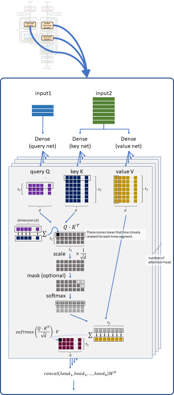
To make multiple attention work in parallel, model dimension (here 256) is divided into multiple heads (here 8), and each head will then have \(\frac(model_dim,head_num)\) dimension (here 32).
👉 Finally, these separated heads are concatenated and then applied dense network to obtain model dimension’s result. (See above picture.)
This technique will make our model have rich expression without losing the computing costs.
Now it’s time to explain about causal mask.
In self-attention on decoder’s side (when use_causal_mask=True in the following code), each token only refers past tokens and cannot access to the future tokens. (See the following picture.)
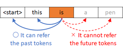
For this reason, the softmax operation in decoder’s self-attention is performed only on lower triangular matrix as follows.
This is because we apply optional mask before softmax operation.
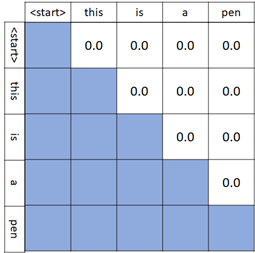
Note : To make a lower triangular matrix, here I use torch.tril() in PyTorch.
import torch.nn as nn
from torch.nn import functional as F
class MyMultiHeadAttention(nn.Module):
"""Initializes a MyMultiHeadAttention module.
Args:
embedding_dim (int): The number of embedding dimensiom
attention_dim (int): The number of dimension within attention unit
num_heads (int): The number of the divided heads (See above.)
use_causal_mask (bool): Whether to mask the future tokens (See above.)
"""
def __init__(
self,
embedding_dim,
attention_dim,
num_heads,
use_causal_mask=False):
assert(attention_dim % num_heads == 0)
super().__init__()
self.num_heads = num_heads
self.attention_dim = attention_dim
self.head_dim = int(attention_dim / num_heads)
self.use_causal_mask = use_causal_mask
self.q_layer = nn.Linear(embedding_dim, attention_dim)
self.k_layer = nn.Linear(embedding_dim, attention_dim)
self.v_layer = nn.Linear(embedding_dim, attention_dim)
self.output_linear = nn.Linear(attention_dim, attention_dim, bias=False)
"""
When self-attention, input2 will be None
"""
def forward(self, input1, mask1, input2=None, mask2=None):
if input2 is None:
input2 = input1
if mask2 is None:
mask2 = mask1
# get size
seq_len1 = input1.size()[1]
seq_len2 = input2.size()[1]
# apply query/key/value net - see above 1
# --> (batch_size, seq_len, attention_dim)
q = self.q_layer(input1)
k = self.k_layer(input2)
v = self.v_layer(input2)
# divide into multiple heads :
# --> (batch_size, seq_len, num_heads, attention_dim / num_heads)
q = q.view(-1, seq_len1, self.num_heads, self.head_dim)
k = k.view(-1, seq_len2, self.num_heads, self.head_dim)
v = v.view(-1, seq_len2, self.num_heads, self.head_dim)
# compute Q K^T - see above 2
# --> (batch_size, seq_len1, seq_len2, num_heads)
score = torch.einsum("bihd,bjhd->bijh", q, k)
# scale the result by 1/sqrt(d) - see above 3
# --> (batch_size, seq_len1, seq_len2, num_heads)
score = score / self.head_dim**0.5
# generate causal mask matrix - see above 4
# (for decoder's self-attention only)
# --> (seq_len1, seq_len2)
causal_mask = torch.ones(seq_len1, seq_len2).int().to(device)
if self.use_causal_mask:
# when applying causal mask, the shape of input1 and input2 should be same
assert(seq_len1 == seq_len2)
causal_mask = torch.tril(causal_mask)
# generate sequence mask matrix
# --> (batch_size, seq_len1, 1) @ (batch_size, 1, seq_len2) = (batch_size, seq_len1, seq_len2)
# (note : bmm should be used for TensorFloat32. Here I then use torch.einsum() instead.)
seq_mask = torch.einsum(
"bxt,bty->bxy",
mask1.unsqueeze(dim=2),
mask2.unsqueeze(dim=1))
# seq_mask = mask1.unsqueeze(dim=2) @ mask2.unsqueeze(dim=1)
# generate final mask matrix
# --> (batch_size, seq_len1, seq_len2)
mask = causal_mask * seq_mask
# --> (batch_size, seq_len1, seq_len2, 1)
mask = mask.unsqueeze(dim=3)
# --> (batch_size, seq_len1, seq_len2, num_heads)
mask = mask.expand(-1, -1, -1, self.num_heads)
# apply softmax with mask - see above 5
# --> (batch_size, seq_len1, seq_len2, num_heads)
score = score.masked_fill(mask == 0, float("-inf"))
score = F.softmax(score, dim=2)
# values in input1's padded position will become "nan" by
# softmax operation, because it's divided by zero.
score = score.nan_to_num()
# dot product with V - see above 6
# --> (batch_size, seq_len1, num_heads, attention_dim / num_heads)
out = torch.einsum("bijh,bjhd->bihd", score, v)
# concatenate all heads and apply linear
# --> (batch_size, seq_len1, attention_dim)
out = out.reshape(-1, seq_len1, self.attention_dim)
# --> (batch_size, seq_len1, attention_dim)
out = self.output_linear(out)
return out
Encoder#
Now let’s implement encoder side using previously generated multi-head attention module.
Same as exercise 08, the purpose of encoder is to generate the context of source sequence (French text).
However, unlike earlier exercise, we don’t use RNN (GRU) and apply the scaled dot-product attention (self-attention) instead.
As you can see in below picture (as it shows with “Nx”), the encoder in transformer is multi-layered architecture, in which it has the repeated layers.
👉 For this reason, we’ll first implement the following repeatable single layer of component.
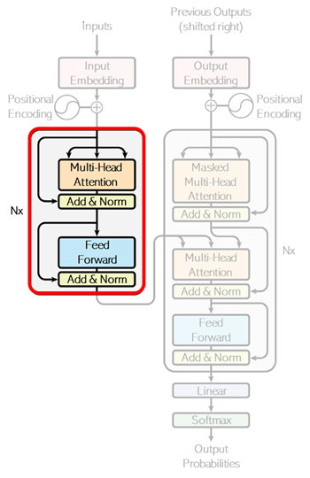
💡 Note: As you can see above, it adds an output of identity layer (which is written by “Add&Norm” in above picture) in the end of each layers.
This is a known technique called residual learning in order to address a degradation problem of training accuracy in deep networks. (See “Deep Residual Learning for Image Recognition” (He, et al., 2015) for details.)
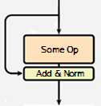
Today, a lot of transformers place the layer normalization between the residual blocks as follows. (In this example, we’ll create the code implementation accompanying the original paper.)
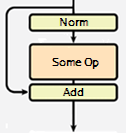
Note : I have also added a dropout for regularization in the following code.
For the effect of a dropout, please see here.
class SingleEncodingLayer(nn.Module):
def __init__(self, model_dim, num_heads, hidden_dim):
super().__init__()
self.self_attention = MyMultiHeadAttention(
embedding_dim=model_dim,
attention_dim=model_dim,
num_heads=num_heads,
)
self.norm = nn.LayerNorm(model_dim, eps=0.001)
self.output_dense1 = nn.Linear(model_dim, hidden_dim)
self.output_dense2 = nn.Linear(hidden_dim, model_dim)
def forward(self, inputs, masks):
# apply self-attention
attention_outputs = self.self_attention(inputs, masks)
# add & layer norm (with dropout)
attention_outputs = F.dropout(attention_outputs, p=0.1)
attention_outputs = attention_outputs + inputs
attention_outputs = self.norm(attention_outputs)
# feed forward
linear_outputs = self.output_dense1(attention_outputs)
linear_outputs = F.relu(linear_outputs)
linear_outputs = self.output_dense2(linear_outputs)
# add & layer norm (with dropout)
linear_outputs = F.dropout(linear_outputs, p=0.1)
linear_outputs = linear_outputs + attention_outputs
linear_outputs = self.norm(linear_outputs)
return linear_outputs
With previously generated component (SingleEncodingLayer), now we implement the multi-layered encoder as follows.
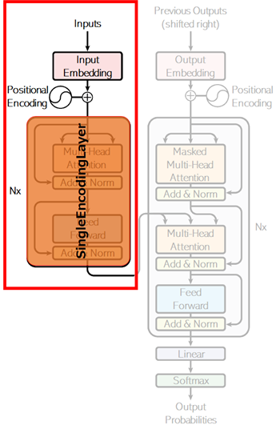
class Encoder(nn.Module):
def __init__(self, vocab_size, seq_len, padding_idx, model_dim, num_layers, num_heads, hidden_dim):
super().__init__()
self.num_layers = num_layers
self.padding_idx = padding_idx
self.embedding = nn.Embedding(
vocab_size,
model_dim,
padding_idx=padding_idx,
)
self.pos_encoding = PositionalEncoding(
seq_len=seq_len,
embedding_dim=model_dim,
)
self.encoding_layers = nn.ModuleList([
SingleEncodingLayer(
model_dim=model_dim,
num_heads=num_heads,
hidden_dim=hidden_dim,
)
for _ in range(num_layers)])
def forward(self, inputs):
# get mask
masks = (inputs != self.padding_idx).int()
# apply embedding
outputs = self.embedding(inputs)
# apply positional encoding
outputs = self.pos_encoding(outputs)
# apply multi-layered encoders
for enc_layer in self.encoding_layers:
outputs = enc_layer(outputs, masks)
return outputs, masks
Decoder#
Next implement decoder side.
Same as encoder, we’ll first implement a repeatable single layer component as the following picture shows.
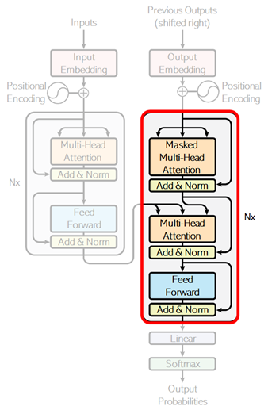
Unlike encoder, both self-attention and cross-attention are applied in decoder. (See above.)
In the first attention, the target sequence (English) is encoded by self-attention. As I have mentioned above, causal masking is applied in this decoder’s self-attention. (Set the property use_causal_mask=True in our custom attention.)
The next attention (cross-attention) is for machine translation. Same as exercise 08, both the encoder’s outputs (contexts) for source (French) and the current decoded results for target (English) are fed into this attention, and the attended results between decoder’s inputs and encoder’s outputs will be obtained.
class SingleDecodingLayer(nn.Module):
def __init__(self, model_dim, num_heads, hidden_dim):
super().__init__()
self.self_attention = MyMultiHeadAttention(
embedding_dim=model_dim,
attention_dim=model_dim,
num_heads=num_heads,
use_causal_mask=True,
)
self.cross_attention = MyMultiHeadAttention(
embedding_dim=model_dim,
attention_dim=model_dim,
num_heads=num_heads,
)
self.norm = nn.LayerNorm(model_dim, eps=0.001)
self.output_dense1 = nn.Linear(model_dim, hidden_dim)
self.output_dense2 = nn.Linear(hidden_dim, model_dim)
def forward(self, inputs, masks, enc_outputs, enc_masks):
# self-attention with causal masking
attention_outputs = self.self_attention(inputs, masks)
# add & layer norm (with dropout)
attention_outputs = F.dropout(attention_outputs, p=0.1)
attention_outputs = attention_outputs + inputs
attention_outputs = self.norm(attention_outputs)
# encoder-decoder attention
scored_outputs = self.cross_attention(
input1=attention_outputs,
mask1=masks,
input2=enc_outputs,
mask2=enc_masks,
)
# add & layer norm (with dropout)
scored_outputs = F.dropout(scored_outputs, p=0.1)
scored_outputs = scored_outputs + attention_outputs
scored_outputs = self.norm(scored_outputs)
# feed forward
linear_outputs = self.output_dense1(scored_outputs)
linear_outputs = F.relu(linear_outputs)
linear_outputs = self.output_dense2(linear_outputs)
# add & layer norm (with dropout)
linear_outputs = F.dropout(linear_outputs, p=0.1)
linear_outputs = linear_outputs + scored_outputs
linear_outputs = self.norm(linear_outputs)
return linear_outputs
Now we build multi-layered decoder with previous layer component (SingleDecodingLayer).
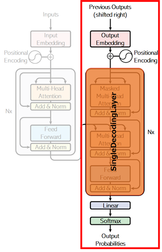
The outputs is used for predicting the next vocabulary by one-hot outputs, and the output’s shape will then be (batch_size, sequence_length, vocabulary_size).
💡 Note : In this example, the final softmax will be applied in loss computation, and here I don’t explicitly implement this operation in this module. (The decoder will then output logits, not probabilities.)
class Decoder(nn.Module):
def __init__(self, vocab_size, seq_len, padding_idx, model_dim, num_layers, num_heads, hidden_dim):
super().__init__()
self.num_layers = num_layers
self.padding_idx = padding_idx
self.embedding = nn.Embedding(
vocab_size,
model_dim,
padding_idx=padding_idx,
)
self.pos_encoding = PositionalEncoding(
seq_len=seq_len,
embedding_dim=model_dim,
)
self.decoding_layers = nn.ModuleList([
SingleDecodingLayer(
model_dim=model_dim,
num_heads=num_heads,
hidden_dim=hidden_dim,
)
for _ in range(num_layers)])
self.output_dense = nn.Linear(model_dim, vocab_size)
def forward(self, target_inputs, enc_outputs, enc_masks):
# get mask
target_masks = (target_inputs != self.padding_idx).int()
# apply embedding
outputs = self.embedding(target_inputs)
# apply positional encoding
outputs = self.pos_encoding(outputs)
# apply multi-layered decoders
for dec_layer in self.decoding_layers:
outputs = dec_layer(
inputs=outputs,
masks=target_masks,
enc_outputs=enc_outputs,
enc_masks=enc_masks,
)
# apply final Linear
# (batch_size, seq_len, model_dim) --> (batch_size, seq_len, vocab_size)
outputs = self.output_dense(outputs)
return outputs
Train Model (Transformer)#
Using previous models, now we build the training loop.
First we set the following parameters for training.
In this example, the training dataset consists of single sentences (not long text) and I have reduced parameters to speed up the training, compared with the parameters which is used in the original paper.
💡 Note : By increasing parameters, transformers will have the ability to capture more difficult contexts, but it’ll need more training and corpus.
model_dim = 256
num_heads = 8
num_layers = 4
hidden_dim = 1024
### In the original paper, the following parameters are used.
#model_dim = 512
#num_heads = 8
#num_layers = 6
#hidden_dim = 2048
In the original paper, the following learning rate scheduler is used for this model, and we also apply this scheduling in this training.
The following function is used to modify learning rate in the training.
def get_lr(step, model_dim, warmup_steps=4000):
step = float(step)
model_dim = float(model_dim)
if step == 0.0:
val1 = 0.0
else:
val1 = 1.0 / (step ** 0.5)
val2 = step / (warmup_steps ** 1.5)
return min(val1,val2) / (model_dim ** 0.5)
Now, put it all together and run training as follows.
In below code, the loss on label id=-100 is ignored in cross_entropy() function. The padded position and the end of sequence will then be ignored in optimization.
Note : Because the default value of ignore_index property in cross_entropy() function is -100. (You can change this default value.)
Transformer has ability to capture complex contexts, but I note that here I just simply apply training by using primitive data of single sentence in small epochs.
Please try more large and complex data by adjusting above parameters and the number of training epochs.
You will also find that transformer is fast.
num_epochs = 5
enc_model = Encoder(
vocab_size=vocab_fr.__len__(),
seq_len=seq_len_fr,
padding_idx=pad_index_fr,
model_dim=model_dim,
num_layers=num_layers,
num_heads=num_heads,
hidden_dim=hidden_dim,
).to(device)
dec_model = Decoder(
vocab_size=vocab_en.__len__(),
seq_len=seq_len_en,
padding_idx=pad_index_en,
model_dim=model_dim,
num_layers=num_layers,
num_heads=num_heads,
hidden_dim=hidden_dim,
).to(device)
all_params = list(enc_model.parameters()) + list(dec_model.parameters())
optimizer = torch.optim.Adam(
params=all_params,
lr=get_lr(0, model_dim),
betas=(0.9, 0.98),
eps=1e-9,
)
step = 0
for epoch in range(num_epochs):
for labels, sources, targets in dataloader:
# optimize
optimizer.zero_grad()
enc_outputs, enc_masks = enc_model(sources)
logits = dec_model(targets, enc_outputs, enc_masks)
loss = F.cross_entropy(logits.transpose(1,2), labels)
loss.backward()
# update learning rate and step
lr = get_lr(step, model_dim)
for param_group in optimizer.param_groups:
param_group["lr"] = lr
optimizer.step()
step += 1
# calculate accuracy
pred_labels = logits.argmax(dim=2)
num_correct = (pred_labels == labels).float().sum()
num_total = (labels != -100).float().sum()
accuracy = num_correct / num_total
print("Epoch {} - loss: {:2.4f} - accuracy: {:2.4f}".format(epoch+1, loss.item(), accuracy), end="\r")
print("")
Epoch 1 - loss: 2.1720 - accuracy: 0.6667
Epoch 2 - loss: 1.8233 - accuracy: 0.7147
Epoch 3 - loss: 1.5693 - accuracy: 0.7454
Epoch 4 - loss: 1.3702 - accuracy: 0.7500
Epoch 5 - loss: 1.1836 - accuracy: 0.7729
Translate Text#
Now translate French text to English text with trained model. (All these sentences are not in training set.)
Here we simply translate several brief sentences, but the metrics to evaluate text-generation task will not be so easy. (Because simply checking an exact match to a reference text is not optimal.)
To eveluate the trained model, use some common metrics available in text generation, such as, BLEU or ROUGE.
Note : Here we use greedy search and this will sometimes lead to wrong sequence. For drawbacks and solutinos, see note in this example.
import numpy as np
end_index_en = stoi_en["<end>"]
max_output = 128
def translate(sentence):
# preprocess inputs
text_fr = sentence
text_fr = text_fr.lower()
text_fr = " ".join(["<start>", text_fr, "<end>"])
text_en_list = ["<start>"]
text_en = " ".join(text_en_list)
_, tokens_fr, tokens_en = collate_batch(list(zip([text_fr], [text_en])))
# process encoder
enc_outputs, enc_masks = enc_model(tokens_fr)
# process decoder
for loop in range(max_output):
logits = dec_model(
tokens_en,
enc_outputs,
enc_masks,
)
idx_en = logits[0][len(text_en_list) - 1].argmax()
next_word_en = itos_en[idx_en]
text_en_list.append(next_word_en)
if idx_en.item() == end_index_en:
break
text_en = " ".join(text_en_list)
_, _, tokens_en = collate_batch(list(zip([text_fr], [text_en])))
return " ".join(text_en_list)
print(translate("j'aime la guitare")) # i like guitar
print(translate("il vit au japon")) # he lives in Japan
print(translate("ce stylo est utilisé par lui")) # this pen is used by him
print(translate("c'est ma chanson préférée")) # that's my favorite song
print(translate("il conduit une voiture et va à new york")) # he drives a car and goes to new york
<start> i love the guitar <end>
<start> he lives in japan <end>
<start> this pen is used to him <end>
<start> this is my favorite song <end>
<start> he drives a car and go to new york <end>
Pretraining#
Pretraining involves training a transformer model on a vast amount of unlabelled data using self-supervised or unsupervised learning objectives.
The goal is to enable the model to learn general language representations, which can then be fine-tuned on smaller, task-specific datasets.
Pretraining for Decoders#
Pretraining transformers, or more generally encoder-decoder seq2seq models, can be divided into 3 categories: pretraining decoder only, encoder only, and both. First we take a look at pretraining only a decoder.
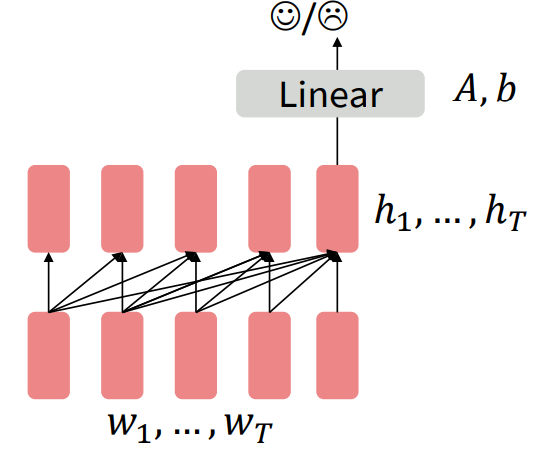
Figure 2. Pretraining decoder on auxiliary task.
Notice in Figure 2, we pretrain the word embeddings (the bottom most row of blocks) and also the network itself. The Linear layer is throwaway and used for the specific auxiliary task.
Generative Pretrained Transformer (GPT) was a Transformer decoder (no encoder!) with 12 layers, 768-dimensional hidden states, and 3072-dimensional FFN hidden layers. They used byte-pair encoding with 40,000 merges. I think what they mean by this is they were able to construct 40,000 matches of subword tokens. The model they trained (GPT1) was trained on BooksCorpus (over 7000 books).
They formatted the inputs to the decoder in a natural language inference format. This is where the model is fed 2 sentences: a premise and a hypothesis. The model is then trained to predict whether the hypothesis is entailing, contradictory, or neutral to the premise sentence.
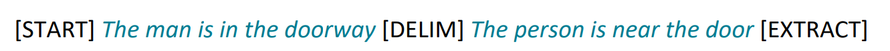
Figure 3. GPT input format.
In Figure 3, they roughly formatted this task in a series of tokens.
GPT-2 and GPT-3 are larger newer versions of the original GPT trained on even larger amounts of data.
Pretraining for Encoders#
For encoders, we can’t pretrain it like a normal language model (because encoders, in the Transformer, have bidirectional context).
The way we pretrain an encoder is feed in a sentence but with randomly words masked. The encoder is then tasked to predict the masked words. This is called masked language modeling.
Bidrectional Encoder Representations from Transformers (BERT) employs this paradigm.
👉 Instead, they replace an input word with [MASK] 80% of the time.
👉 10% of the time it will replace the input word with a random token and 10% of the time it will leave the input word unchanged.
The reasoning for the last 2 options (as opposed to just simply randomly masking words) is to force the model to learn meaningful representations instead of just focusing on finding the right word for the masked token.
Another way of pretraining, introduced in BERT, was passing in 2 pieces of contiguous text. And the model is tasked with classifying whether or not the 2nd piece of text directly follows the 1st piece of text.
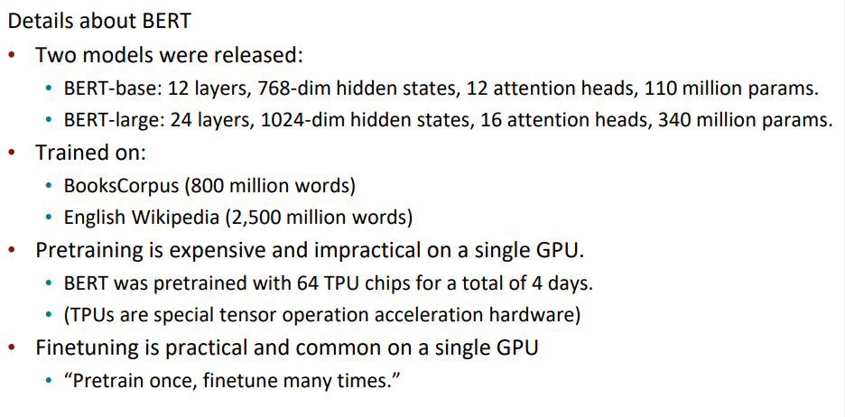
Figure 4. Details about BERT.
Evaluating in NLP is difficult. Many NLP experts have built datasets that are particularly hard because of certain themes and understandings that must be understood to perform well on those datasets.
Here are a few:
QQP (Quora Question Pairs)
detect paraphrase questions
QNLI
natural language inference
SST-2
sentiment analysis
CoLA
corpus of linguistic acceptability; detect whether sentences are grammatically correct
STS-B
semantic textual similarity
MRPC
microsoft paraphrase corpus
RTE
small natural language inference corpus
There are many BERT variants like RoBERTa, SpanBERT, DistilBERT, etc. RoBERTa trains BERT for a longer period of time because they claim BERT was underfit and they also remove the next-sentence prediction task. SpanBERT masks a contiguous span of words.
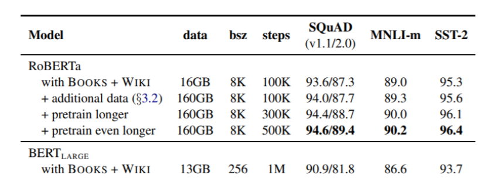
Figure 5. RoBERTa compared to BERT.
The general trend is just longer training on larger datasets with larger models.
Pretraining for Encoder-Decoders#
A model called T5 is trained with span corruption. Instead of masking a single word, we mask a span of words and replace it with a single token. So the model not only has to predict what’s missing, but it also doesn’t know how many subwords are missing (so it must learn this too!).
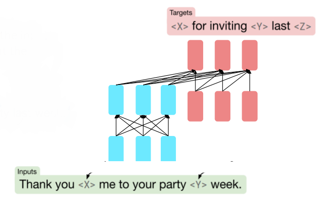
Figure 6. Span Corruption.
One interesting property of T5 was that it could be finetuned to answer general questions by retrieving knowledge from its parameters.
By pretraining, the model can learn trivia knowledge, syntax, coreference, lexical semantics/topics, sentiment, simple arithmetic, and also cultural aspects of society.
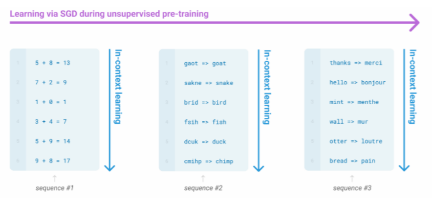
Figure 7. Learning without gradient steps.
Large language models seem to be able to pick up patterns in the text from what I’m understanding.